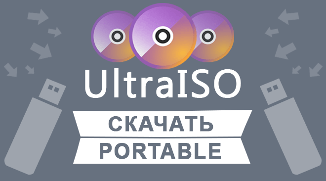

|  | Категория: | Работа с образами |
| Поддерживаемые ОС: | Windows 10/8/7/XP | |
| Разрядность: | 32 bit, 64 bit, x32, x64 | |
| Для устройств: | Компьютер | |
| Язык интерфейса: | на Русском | |
| Версия: | Последняя | |
| Разработчик: | EZBSystems |
Установочные пакеты операционных сред, графических редакторов и прочего софта компонуют в единый файл. Это образ диска, который выпускается в многочисленных форматах. Большинство распознает утилита UltraISO. Программа также предлагает собственный формат ISZ-архив, но в бесплатной редакции содержит ряд неудобств и ограничений.
 |
 |
 |
Скачать UltraISO Portable на русском
Поработав с UltraISO честно (без кряка), понимаешь, что проще скачать portable редакцию утилиты. Тут сохранен базовый функционал. Портативная программа поддерживает популярные форматы образов, способна создавать загрузочные диски. К достоинствам UltraISO portable относится отсутствие окна, напоминающего об использовании незарегистрированного софта. Кроме того исключены ограничения по размеру образа диска в 300 Мб. Говоря лаконично, это полноценная программа, которой не требуется лицензия. Да и хлопот с портативным приложением намного меньше.

Приоритетное достоинство UltraISO portable – работа без установки. Утилита запускается со съемного носителя информации и работает автономно. Это выгодно не только для пользователя. Сохраняется больше свободного места на жестком диске. Операционная среда не засоряется многочисленными файлами, правками реестра. Как результат, компьютер меньше теряет в производительности. С пользовательской точки зрения выгода очевидно. Необходимо скачать файл, но устанавливать приложение не требуется. Разве что распаковать архив один раз.
UltraISO для версий windows:
Что может программа UltraISO
Записать ISO на диск

Записать ISO на Флешку

Создавать ISO Файлы

Конвертировать ISO

Скачать UltraISO Portable бесплатно
| Приложение | OS | Формат | Версия | Загрузка |
|---|---|---|---|---|
| UltraISO (Ультра ИСО) | Windows 10 | x32 — x64 | Бесплатно (Portable) | |
| UltraISO (Ультра ИСО) | Windows 8 | x32 — x64 | Бесплатно (Portable) | |
| UltraISO (Ультра ИСО) | Windows 7 | x32 — x64 | Бесплатно (Portable) | |
| UltraISO (Ультра ИСО) | Windows XP | x32 — x64 | Бесплатно (Portable) | |
Активировать программу можно взяв ключ активации или заменить файл в папке установленной программы. (пароль на архиве 4374) |
||||
Как установить UltraISO Portable:
- Скачайте установочный файл по ссылке выше, выберите любую папку установки.
{kind=link}
2. Если планируется Portable версия то лучше установить на флешку или на диск (не в Program Files).
{kind=link}
3. Дождитесь конца установки, активируйте программу перенеся файлы из архива файлы из архива (пароль 4374) в папку программы при этом заменив имеющиеся там файлы.
{kind=link}
Портативное приложение не подвержено автоматическим обновлениям. Программа остается в неизменном виде на USB-диске или другом носителе информации. Обновить portable несложно, достаточно снова скачать пакет или его архив когда выйдет новая версия.
а шо так можно было?
Спасибо всё понятно и просто!
вроде работает
быстро устанавливается
Это идеальное решение, даже бесплатно всё.
хорошая версия
Да, было не просто, но у меня получилось
стабильно работает
Годная прога…
Вот я думал-думал, как всё же реализовать нормализацию скачивания игр и их открытие без всяких багов а-ля неизыестный формат, теперь я профиль в этом деле
Портативная версия рулит, никакого лишнего мусора на компе.
Версия ULTRAISO PORTABLE мне больше подходит
установил по инструкции